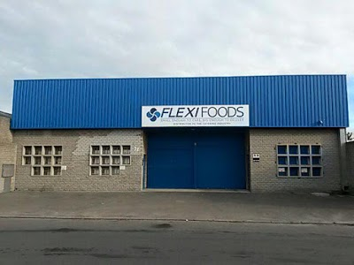
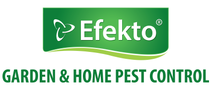

👋 Hello I'm
Kudakwashe Mukombachoto
Junior Web Developer
ABOUT ME

I have a need to produce results. I am the type of person to meet challenges head-on rather than sweep them under the rug and hope they go away. While I'm an optimistic person, I am also realistic about the current situation and how satisfactory or unsatisfactory it is.
Someone who thinks positively and who can execute on difficult tasks. I'm not an individual who needs to be micro-managed. Rather, when given a specific task, I can figure out the best ways to solve the problem in an autonomous manner. I take responsibility for my actions and when things go wrong I don't look to outside forces to blame, rather I'm someone who looks at where I can improve upon the next time around. Pointing fingers solves nothing.
Education

2012 - 2016
Monument Park High School
Secondary Education
English, Afrikaans, Life Orientation, Mathematics, Physial Science, Life Sciences, and Consumer Studies

2018 - 2019
Salesians Life Choices
Tertiary Education
The academy was designed to be a place of beauty, order, purpose and opportunity – the things that are fundamental for the nourishment of every human heart. We provide state-of-the-heart job-training programs intended to give school leavers the skills and direction they need to land meaningful and good-paying jobs.

Skills


HTML5

CSS
SASS

JavaScript/jQuery
WORK EXPERIENCE

December 2015 - January 2016
Flexi Foods
Delivery
Delivering Flexi food's products to all costomers. Making sure that all the customers are satisfied with our services by making our deliveries on time, being friendly to the customers and always expressing gratitude. Being able to set goals and work accordingly is a skill I learnt in the process.

Contact: 021 931 1100
December 2016 - August 2018
Efekto
Sales's person
Advertising the efekto products and managing sales, developing a superior attention to detail by double checking stock, delivery dates and payments. Learning goal setting by trying to reach a certain amount of sales within a time frame. Analysing sales and customer feedback improved reporting skills. Further communication skills were acquired through negotiating with customers.

Contact: 021 987 2740